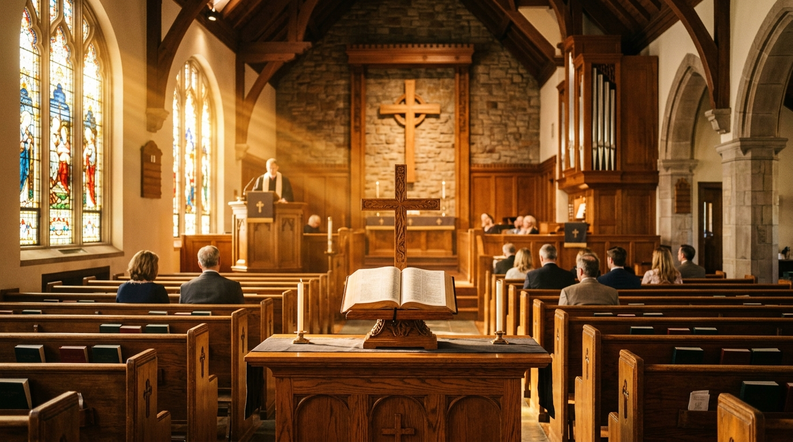
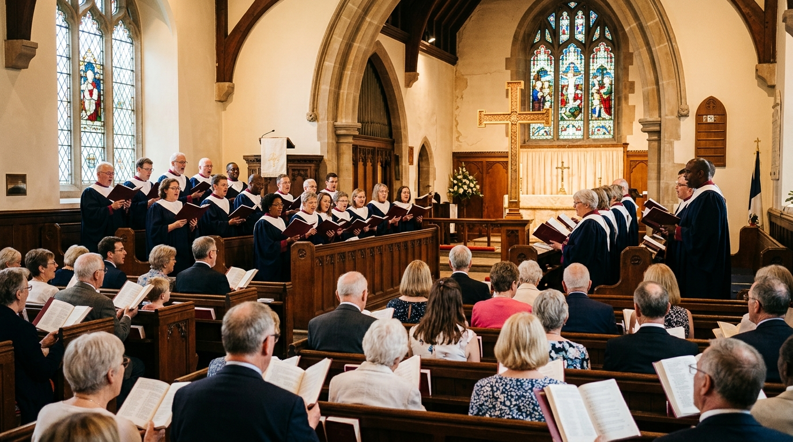

Expository, verse-by-verse messages from the King James Bible to feed your spirit throughout the week.

Click Play to listen. You can scrub anywhere along the timeline or download the sermon study outline.
Select any message below to load into the player above.
Galatians 5:1
An expository study on how believers maintain their steadfast walk in God's grace rather than human legalism.

Psalm 119:89Examining the divine preservation, purity, and power of the King James Bible for the believer today.

Romans 1:16Why we are not ashamed of the Gospel of Christ: it is the power of God unto salvation to all who believe.
 James 5:16
James 5:16
Practical encouragement on how personal and corporate prayer unleashes God's power in our families.